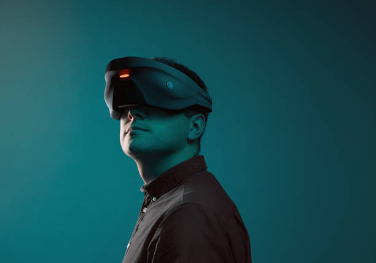

Survoler & SCROLLER
Je suis actuellement étudiant en deuxième année de BTS SIO et je suis passionné par l’informatique depuis la première fois que j'ai saisi du texte sur Microsoft Word. J’ai choisi de poursuivre des études en informatique car je crois que c’est un domaine qui offre des opportunités incroyables pour résoudre des problèmes complexes et améliorer la vie des gens.
Au cours de mes études, j’ai acquis des compétences dans divers domaines tels que la programmation, la gestion de projet et la sécurité informatique Voir Compétences. J’ai également eu l’occasion d’appliquer ces compétences dans des projets pratiques tels que la création d’un site web pour une entreprise locale Voir Projets.
Mon objectif professionnel à court terme est d’obtenir un stage dans une entreprise informatique où je pourrai continuer à développer mes compétences et acquérir une expérience pratique. À long terme, j’aimerais travailler dans le domaine de la cybersécurité pour aider à protéger les entreprises contre les menaces en ligne. En dehors de mes études, j’aime passer du temps à coder des projets personnels et à explorer les dernières technologies informatiques. Je suis également passionné par les Mangas, les Animes et les jeux vidéo et j’aime jouer avec mes amis en ligne.